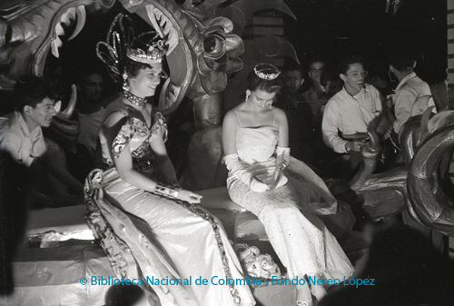
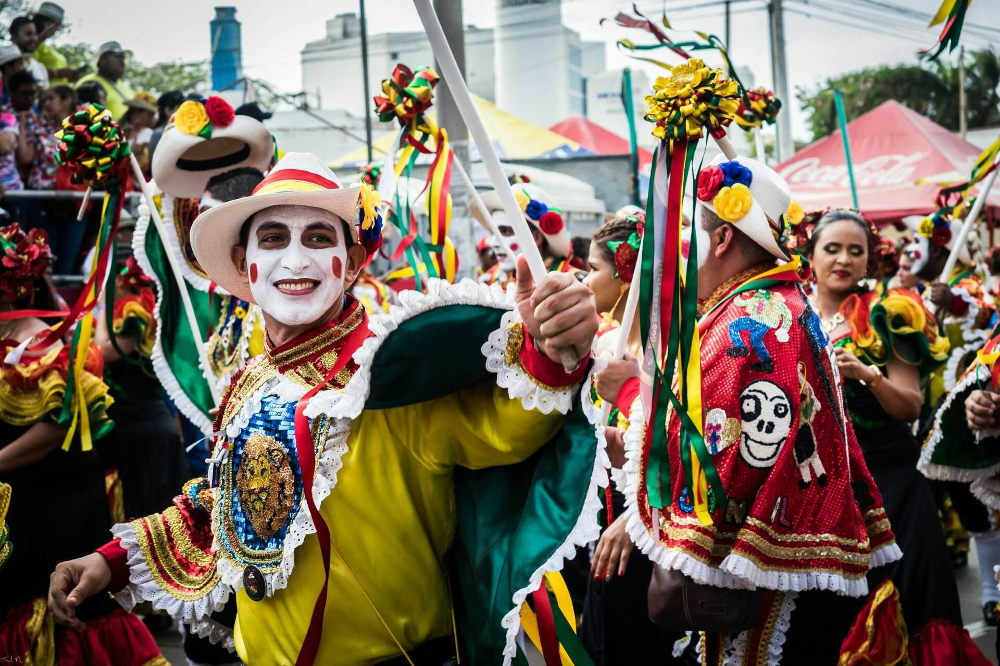
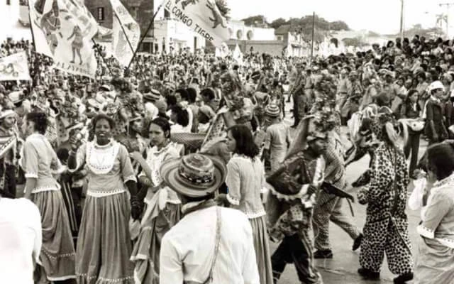

El Carnaval de Barranquilla tiene sus orígenes en la época colonial, cuando las tradiciones festivas traídas por los españoles se mezclaron con las expresiones culturales de los pueblos indígenas y de las comunidades africanas que llegaron al Caribe colombiano. Esta fusión de culturas dio lugar a celebraciones populares en las que la música, la danza, los disfraces y las comparsas se convirtieron en una forma de expresión colectiva.
Con el paso del tiempo, estas manifestaciones se fueron consolidando como una tradición regional que se transmite de generación en generación, incorporando nuevos elementos artísticos y sociales. Durante el siglo XX, el carnaval comenzó a organizarse de manera más formal mediante desfiles y eventos oficiales, fortaleciendo su reconocimiento cultural.
Entre los momentos más importantes en su consolidación se destacan la institucionalización de los principales desfiles, la creación de la figura de la Reina del Carnaval —quien actualmente es el rostro y embajadora de la tradición— y el surgimiento de organizaciones encargadas de preservar las tradiciones y coordinar la celebración.